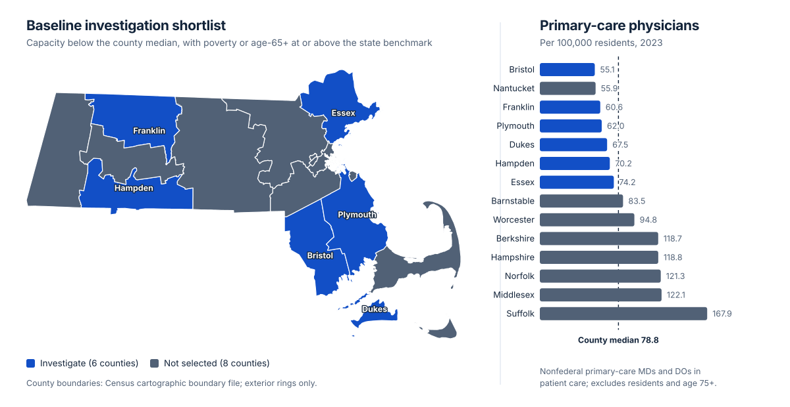

Access planning · Census/ACS · HRSA · Python · SQL · Tableau
Massachusetts Primary Care Access Planning
County-level screen of all 14 Massachusetts counties that compares primary-care physician supply with poverty and age, then tests how different assumptions change the shortlist.
Download the two-page decision memoProblem
Picking which Massachusetts counties to study first for primary-care access sounds simple: find the ones with fewer doctors and more need. The trouble is that the list moves depending on where the cutoffs sit, and a shortlist that changes completely under a slightly different cutoff isn't much use to anyone planning follow-up research.
What I did
Joined Census ACS 2019–2023 estimates with HRSA AHRF primary-care physician counts for all 14 counties, using Python for download and validation and SQL for the joins and county calculations.
Set a baseline rule that shortlists counties below the county median of 78.8 physicians per 100,000 and with poverty at or above 9.98% or age 65+ at or above 17.47%. Then reran the screen under eight different settings, changing the supply cutoff, the workforce year, the poverty/age condition and the margin-of-error estimates, and mapped the results in Tableau.
Result
The baseline screen selects Bristol, Dukes, Essex, Franklin, Hampden, and Plymouth.
The eight settings produced five different shortlists, and Franklin and Hampden made all of them. Bristol, Dukes and Plymouth held under all four physician-supply settings.
Scenario explorer


The selector shows the rule and the saved shortlist for each setting. The baseline map above stays unchanged.
Limitations
The shortlist is a screen for follow-up research and does not measure unmet need. The data are historical estimates, and county averages hide differences between neighborhoods.
Physician counts miss open appointments, insurance acceptance, care across county lines and care from nurse practitioners and physician assistants. Counties left off the shortlist do not necessarily have good access.